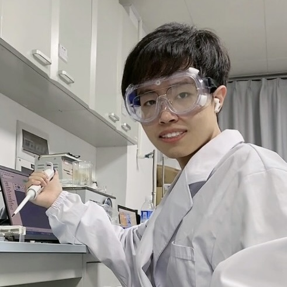

Fractionation due to soil–water interactions affects global isotopic evapotranspiration partitioning
Advances in Water Resources, 2026

Hi! I'm Shaojie.
My passion lies in various fascinating phase equilibrium and phase transition processes in porous media, particularly in soils, and their implications for poromechanics. I'm also interested in understanding how these pore-scale processes shape Earth and engineering systems at the large scale. Current research mainly focus on:
I received both my Ph.D. degree in 2026 and B.S. degree in 2020 from Hunan University under the supervision of Prof. Chao Zhang.
Advances in Water Resources, 2026
Journal of Engineering Mechanics, 2026
Journal of Geotechnical and Geoenvironmental Engineering, 2026
Physical Review Letters, 2025
Canadian Geotechnical Journal, 2025
Physical Review Fluids, 2025
Journal of Geotechnical and Geoenvironmental Engineering, 2025
The Journal of Chemical Physics, 2024
International Journal of Heat and Mass Transfer, 2024
Water Resources Research, 2023
Canadian Geotechnical Journal, 2023
Colloids and Surfaces A: Physicochemical and Engineering Aspects, 2023
Journal of Geotechnical and Geoenvironmental Engineering, 2023
Acta Geotechnica, 2023
Géotechnique, 2022
Water Resources Research, 2022
Journal of Geotechnical and Geoenvironmental Engineering, 2022